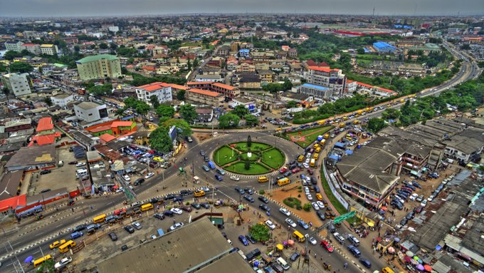

Site Name
Lagos Connect
Lagos Connect represents the connection between businesses, entrepreneurs, customers, and job seekers in Ikeja, Lagos. The name reflects the goal of bringing people and businesses together while creating opportunities for growth.
Proposed domain: lagosconnect.org
Site Purpose
Lagos Connect is a digital platform designed to support and promote businesses in Ikeja, Lagos. It provides business owners with an opportunity to showcase their products and services, connect with other entrepreneurs, and participate in networking events and exhibitions.
The website also creates opportunities for unemployed youths by allowing businesses to share job openings and employment opportunities.
Through business listings, events, membership benefits, and job opportunities, Lagos Connect aims to strengthen the local business community and encourage economic growth.
Scenarios
- How can I find local fashion, jewelry, bag, and shoe businesses in Ikeja?
- How can I register my business and become a member of Lagos Connect?
- Where can I find job opportunities posted by local businesses?
- Are there upcoming networking events, exhibitions, or trade fairs?
- How can joining Lagos Connect help my business grow?
Color Schema
- Deep Green (#14532D): Header, headings, navigation, and footer.
- White (#FFFFFF): Main background and content areas.
- Black (#171717): Body text and important information.
- Light Green (#E8F5E9): Section backgrounds and content cards.
- Accent Green (#4CAF50): Buttons, borders, and highlights.
Typography
Georgia
Georgia will be used for headings to give the website a professional and distinctive appearance.
Arial
Arial will be used for paragraphs, navigation links, buttons, and general website content because it is clear and easy to read.
Website Structure
- Home: Introduction, featured businesses, weather, events, and opportunities.
- Discover: Information about Ikeja, its community, history, demographics, and attractions.
- Directory: A collection of registered local businesses and their details.
- Join: Membership information, benefits, and a registration form.
Homepage Hero Image
The homepage will feature an aerial view of Lagos to represent the city's energy, business activities, and commercial environment.

Wireframes
The following layouts represent the planned homepage arrangement on desktop and mobile devices.